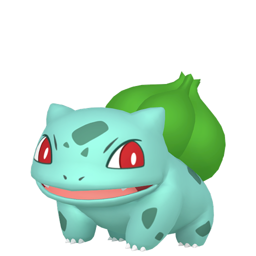
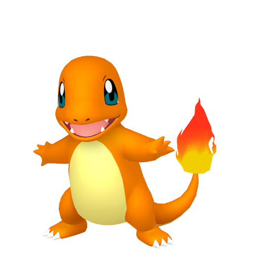
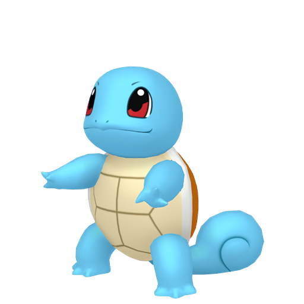

IV & EV
Studio dei Punti Individuali e dello Sforzo
I Punti Individuali
I punti individuali, spesso indicati come IV (individual values), sono uno degli elementi fondamentali nella determinazione del valore finale delle statistiche di un Pokémon.
Ogni specie ha sempre le stesse statistiche base, pertanto gli IV hanno lo scopo di differenziare tra loro i diversi esemplari.
In un certo senso potrebbero essere considerati gli equivalenti dei geni del Pokémon.



Calcolo PS - Gen 1
KantoInserisci gli IV per calcolare i PS risultanti.
Valore PS Finale
--